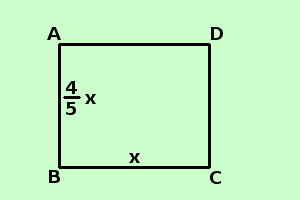

|
sviluppo Risolvere il seguente problema In un rettangolo il perimetro misura 180 cm. Sapendo che un lato e' i 4/5 dell'altro determinare l'area del rettangolo ipotesi: il perimetro misura 180 cm → AB + BC + CD + DA = 180 un lato e' i 4/5 dell'altro tesi: trovare l'area (Area = BC·AB)  Da notare che, anche qui, come in tutti i problemi di geometria, e' essenziale conoscere le proprieta' delle figure coinvolte: qui devi sapere che un rettangolo ha i lati opposti uguali, e conoscere la formula per trovare l'area lunghezza del lato BC (uguale al lato DA = x
so che per il perimetro vale AB + BC + CD + DA = 180 sostituisco ai lati il loro valore ed ottengo
minimo comune multiplo
sommo
Applico il secondo principio per togliere i denominatori (moltiplico per 5) 18x = 900 applico il secondo principio per trovare la x (divido per 18)
x = 50 lunghezza del lato BC = x = 50 cm
Area = Base · Altezza = BC · AB = 50 · 40 = 2000 cm2 |